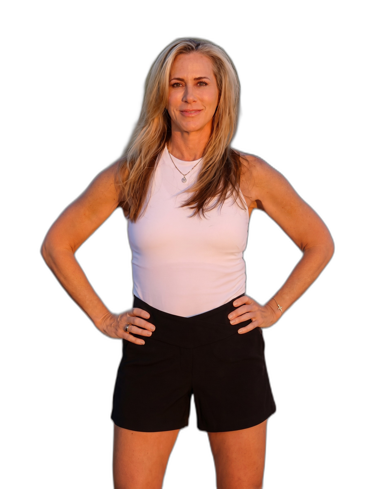
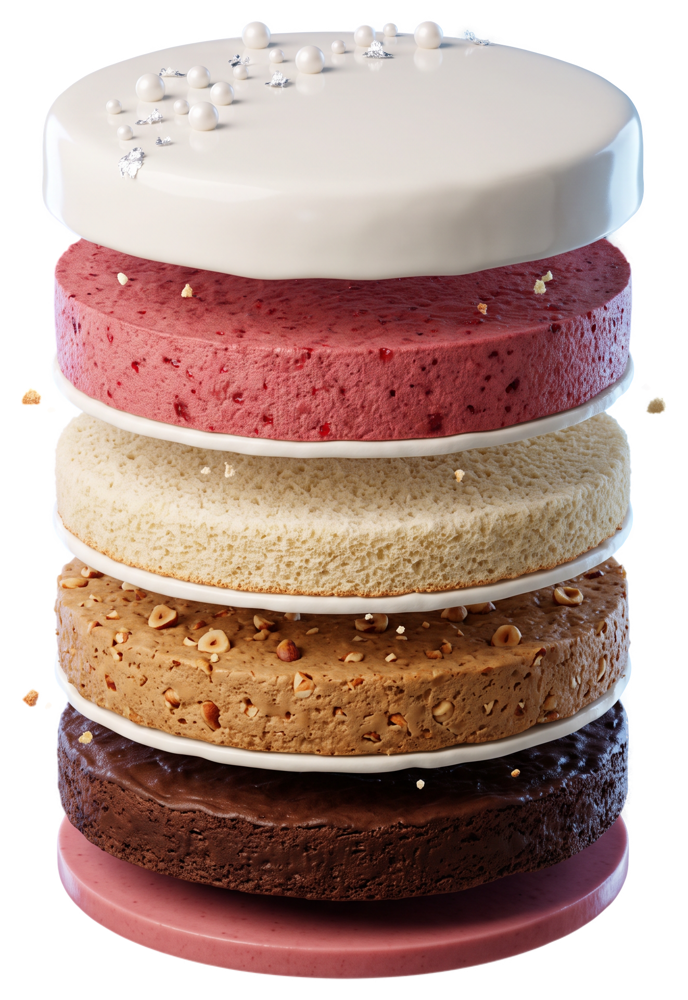

Julie Gibson Clark, structural engineer. 25 years as the scientist and the experiment.
Personal experience, not medical advice. Check with your own doctor before you change your routine. Julie has an affiliate relationship with NOVOS.
Dementia.
Alzheimer's.
Parkinson's.
The silent decade of decline.
My son, all the days of his life.
His kids.
Another possibility for how we age.
What can I actively do to rewrite that trajectory?
Ten years pass.
I age about six and a half.
1.0 means one year of aging per calendar year. DunedinPACE was built at Duke and Columbia, published in 2022, and is used in more than sixty-five large studies in eighteen countries.
Belsky et al., eLife 2022. Balachandran et al., Nature Aging 2024.
One test, one person, one body. A story, not a trial.

Aging is the biggest risk factor for heart disease, cancer, dementia and type 2 diabetes. Slow the aging itself and you push all four back at once.
Nobody has ever eaten a bowl of icing and called it a good cake.
The whole icing spectrum on one line. Sleeping well, eating well, moving and managing stress do most of the work. Icing on nothing is just a bowl of frosting.
Nobody in the blue zones is in a hyperbaric chamber. They walk, they garden, they eat well, they sleep with the sun.
For half this room it changes sleep, bones, mood, appetite, energy, even the shape of your body. Every other layer works less well on top of it.
The Menopause Society, 2022. For healthy women with symptoms, under sixty or within ten years of menopause, the benefits of hormone therapy generally outweigh the risks.
FDA, November 2025. Black-box warnings removed from menopausal hormone therapy.
One action. Find a doctor with the letters MSCP, at menopause.org
Your brain's drainage system flushes the day's waste, mostly while you sleep. Imaged in living people for the first time in 2024.
lower mortality risk for the most regular sleepers. Sixty thousand adults, 2023. Regularity beat duration.
Same bedtime. Every single day.
The fastest way to speed up your pace is to neglect sleep. Everything else tonight helps your sleep inside that window.
Julie's plate: a pound of vegetables a day, half of it greens. Wild blueberries. One gram of protein per pound of lean mass. A ten-hour eating window. Built over years, not overnight.
What a glucose monitor shows after sugar or simple carbs.
Insulin locked on high. Cells never get their clean-out. A hallmark of aging.
Glucose sticks to proteins. Arteries, eyes, kidneys, skin. HbA1c measures it.
You don't know until you look. Every student in the Academy wears a glucose monitor for two weeks.
Mayo Clinic, December 2024, 183 countries. The gap is the decade of being here, but not functionally.
Muscles, bones and, increasingly, the brain. Compound lifts: squats, push-ups, lunges.
Heart and lungs. Short intense sprints with recovery. What you need sprinting through the airport.
Metabolic health and the heart. Walking, hiking, a pace where you can still chat.
Brain, joints, staying on your feet. The one that keeps you safe enough to do the other three.
people, 48 studies. The stronger the grip, the lower the risk of dying, almost in a straight line.
against 2,000: 47 percent lower risk of dying, 38 percent lower risk of dementia. Lancet Public Health, 2025.
on one leg, shoes off. The measure that falls fastest with age. Mayo Clinic, 2024. Try it tonight.
Twenty-five years of adding, subtracting and fine-tuning. The core bones are always there. An example of a diversified portfolio, not a test you have to pass tomorrow.
Start small. A daily walk and a few air squats while the coffee brews. Short movement breaks cut post-meal blood sugar spikes by over twenty percent.
Stress is the silent saboteur. Julie's cortisol in 2018: rock-bottom in the morning, through the roof at night. Six months of Transcendental Meditation and the curve normalized. It has stayed that way.
Double inhale through the nose, one long exhale through the mouth. Three times. Thirty seconds, zero dollars, and your nervous system is out of fight-or-flight.
Stanford, over a hundred people for a month: five minutes a day calmed the nervous system faster than standard meditation.
Breathwork, prayer, meditation, TM. The best practice is the one you will actually do.
The day is built backward from bedtime.
Lights out at nine sets dinner at six. Dinner at six sets the window at eight. Sleep decides every other piece of the day.
Borrow the order, not the clock. Sleep first, then food, movement and stress. Julie's 5 AM might be your 6:30. Screenshot this and pick one anchor to test this week.
Daily steps, resting heart rate, sleep, blood pressure. A notebook, a modest watch, a scale.
Vitamin D, homocysteine, inflammatory markers, micronutrients. With your physician or a functional medicine doctor.
A targeted list for your body, your genetics, your blood work. Never a stranger's list.
A blood test tells you where the cake has a hole,
so you know where to put the icing.
What one person takes after reviewing her own labs, not your shopping list: vitamin D3/K2, magnesium (taurate, malate, glycinate), B-complex, omega-3s, NOVOS longevity compound (affiliate). Full breakdown at JulieGibsonClark.com. The goal is not to measure everything. The goal is to stop guessing.
The sentence on the wall. I want my healthspan to match my lifespan.
The engine when the novelty fades. Being here to show my son another possibility for how we age.
Time, energy, money, relationships, the real amounts. An hour in the morning. About twelve dollars a day.
When all three align you stop asking “What should I do?” and start asking “Does this fit?”